遊びで植物を育てよう
2025/09/20
山椒は収穫しないで鑑賞してます。
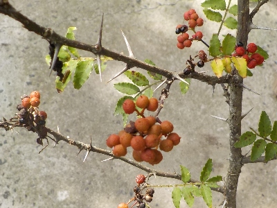
山椒の実を収穫するのを忘れてました。
赤い実や黒いタネがキレイなので、このまま鑑賞することにしました。
【山椒TOP】
【木TOP】
【園芸TOP】
2025/03/16
山椒のタネを蒔きました。
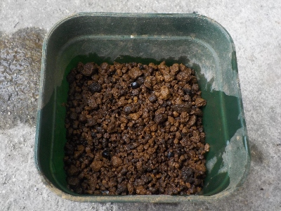
去年、木にぶらさがっていた実を蒔きました。3粒しかないので失敗する確率が高いかも。
【山椒TOP】
【木TOP】
【園芸TOP】
2024/10/06
山椒の実からタネが出てきました。
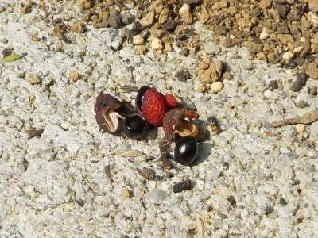
黒いタネが落ちずにぶら下がっていたので収穫しました。
忘れていなければ春に種蒔きします。
【山椒TOP】
【木TOP】
【園芸TOP】
2024/08/17
ペットボトルで山椒の挿し木をしました。
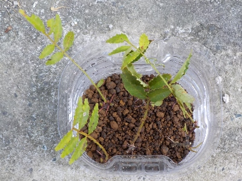
この写真を見て思ったんですが、枝が細いですね。
大丈夫かな？
【山椒TOP】
【木TOP】
【園芸TOP】
2024/07/17
山椒の実を収穫しました。
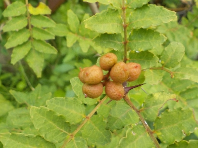
山椒の実は青くならなさそうです。このまま置いておいたら乾燥してタネになりそうなので収穫しました。
実は葉っぱよりも更にいい匂いがしますね。何に使おうかな。
【山椒TOP】
【木TOP】
【園芸TOP】
2024/06/01
山椒の実がちょっと赤いです。
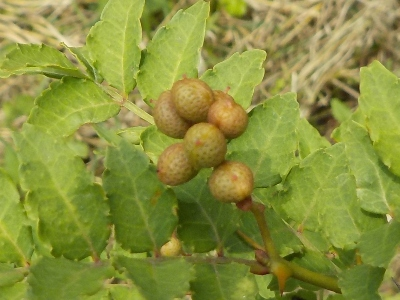
山椒の実がちょっと赤いです。
山椒の実は緑色のイメージがありますが、これは少し赤いです。水不足で枯れた感じなのかな。収穫しないでしばらく様子をみようと思います。
【山椒TOP】
【木TOP】
【園芸TOP】
2024/04/07
山椒が1本枯れました。
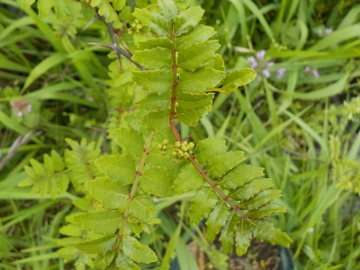
1本はすっかり枯れて葉っぱも何も無いですが、残った1本は花が咲きそうです。
数が減ったので、また挿し木をしようかな。
【山椒TOP】
【木TOP】
【園芸TOP】
2023/07/09
山椒の葉っぱが黄色くなりました。
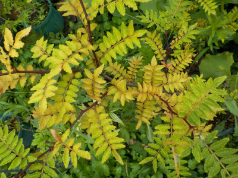
水不足や栄養不足でしょうか、葉っぱの色が悪くなりました。
鉢植えを止めて地植えにした方がいいかな。そうなると植える場所を探さないといけないな。
【山椒TOP】
【木TOP】
【園芸TOP】
2023/04/22
挿し木の山椒に花がありました。
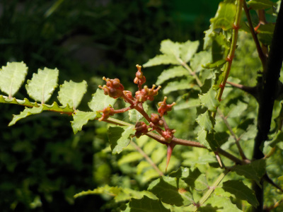
挿し木で育てている山椒1本に花がありました。雌花のようです。
実になるかな？
雄花の木があるので、その近くに植えれば沢山実が出来そうです。
【山椒TOP】
【木TOP】
【園芸TOP】
2022/09/11
山椒のタネを5粒もらいました。
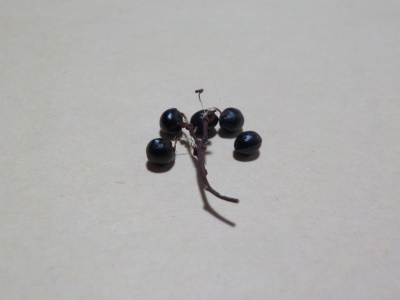
種はペットボトルの中に蒔きました。春まで放置の予定です。
4月に芽がでるかな？
【山椒TOP】
【木TOP】
【園芸TOP】
2022/09/06
山椒が風で倒れるので鉢を大きくしました。
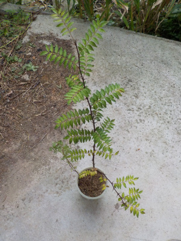
ひょろひょろと背が伸びた山椒ですが、鉢が小さいのでよく風で倒れていました。
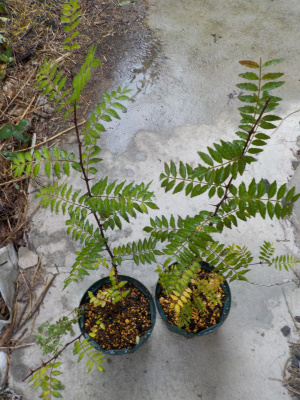
なので鉢を大きくしました。もうちょっと大きくなったら地植えにした方がいいかな。
【山椒TOP】 【木TOP】 【園芸TOP】
2022/04/02
山椒が青々としています。
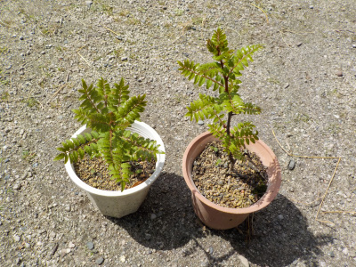
あまりすくすくとは育っていない山椒ですが、若葉の時期は調子が良さそうに見えます。
まだ小さいので、料理用に葉っぱを採ろうって気にはならないです。
【山椒TOP】 【木TOP】 【園芸TOP】
2021/05/03
山椒はいい香りがしますね。
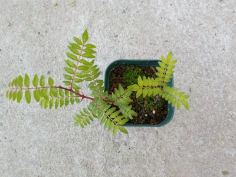
山椒がすこしだけ大きくなりました。
なんか調子が良さそうなので、植替えしたら更に大きく育ちそう。
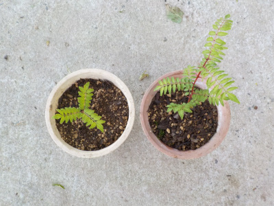
早速大きな鉢に植替えしました。
手荒なことはしていませんが、作業中は山椒のいい香りがしていました。
山椒が大きくなったら、葉っぱは何に使おうかな？
・・・思いつかない。
普段食べる料理に使えない気がする。
【山椒TOP】 【木TOP】 【園芸TOP】
2020/09/13
山椒が大きくなりません。

挿し木の山椒ですが、大きくなりません。
5月に挿し木したので、もう根っこが出て大きくなってもよさそうですが、小さいままです。
挿し木の元の木も大きくならなかったから、同じ遺伝子で育ちがよくないのかな。
【山椒TOP】 【木TOP】 【園芸TOP】
2020/06/14
挿し木の山椒の葉っぱが広かったので、植え替えしました。
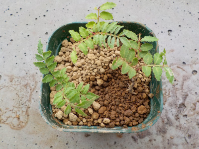
葉っぱが広がって、ペットボトルが窮屈になったので植え替えしました。
根っこがないのによく成長できますね。
確認出来ないくらい小さい根っこが生えているのかな？
【山椒TOP】 【木TOP】 【園芸TOP】
2020/06/07
山椒の挿し木が普通に成長しています。
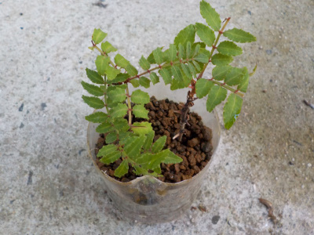
とっても成長しているので、多分挿し木が成長していますね。
近いうちに植え替えしようと思います。
【山椒TOP】 【木TOP】 【園芸TOP】
2020/05/02
山椒の挿し木をしました。
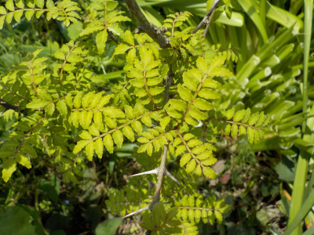
山椒の木があるんですが大きくなりません。
植わっている場所があっていないのかな？
山椒は動かすと枯れるってネットに書いてあったので、挿し木して増やしたものを別の場所に植えようと思っています。
木が小さいので挿し木用の枝が沢山取れません。3本採って挿し木しました。
【山椒TOP】
【木TOP】
【園芸TOP】
山椒はちらし寿司かな。
【おいしいものを食べよう。】【しっかり寝よう。】
【ソロ活をしよう!】【季節感のあることをしよう。】【動画視聴はほどほどに。】【当サイトの全てのコンテンツは無断転載禁止です。】